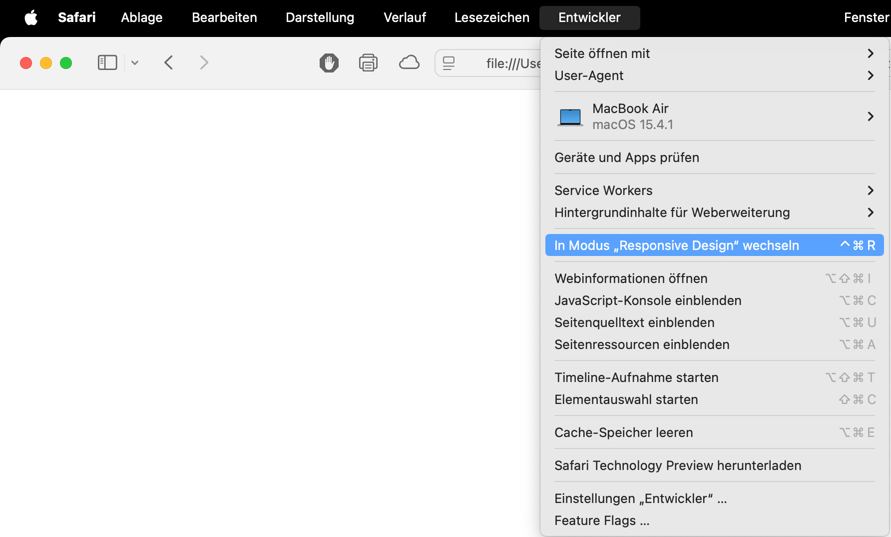

(??NUTZUNG ?)
Die Website funktioniert auf zwei Ebenen.
Desktop; Tool
Mobile; Gallery + How to Print
Desktop; Veränderst du die Größe des angezeigten Fensters, verändert sich ebenfalls das Bild was du siehst.
Mobile; Hier wirst du eingeladen dein eigenes Heft zu erstellen. Entdecke verschiedene Bilder auf der Seite und verwende den Shortcut CMD+P, wenn dir eins gefällt und du es drucken möchtest. Sammle so mehrere Bilder und Inhalte die du spannenden findest. Experimentiere mit doppeltem und doppelseitigem Druck, verschiedenen Papieren, Quer- und Hochformat und Bindung.
Currently still Beta-Version;
PRINTING ONLY WORKS ON SAFARI AS BROWSER
{ { { Hier } } } findest du einige Ideen und Inspirationen von fertigen Heften zu diesem Projekt.
{ { { Hier } } } kannst du gerne dein eigenes Heft einreichen.
(??
Das System dahinter;
In bestimmten {Pixel-}Bereichen erscheinen unterschiedliche Bilder.
Es gibt 5 Höhenbereiche und die Breite ist unterteilt in 16er-Schritte mit einigen minimalen Abweichungen. Vielleicht fällt dir auf, dass die sehr großen Größen auf bestimmten Monitoren gar nicht erreichbar sind.
Ein geheimer Trick kann angewendet werden!
Über die Menüleiste gelangst du über Entwickler > In Modus „Responsive Design“ wechseln in eine eigene Unterfunktion vom Browser. Hier kannst du alle möglichen Monitorgrößen simulieren. Du kannst ebenfalls den daneben stehenden Shortcut verwenden. Aus dieser Unterfunktion kannst du ebenfalls drucken!

have fun!!!
?)